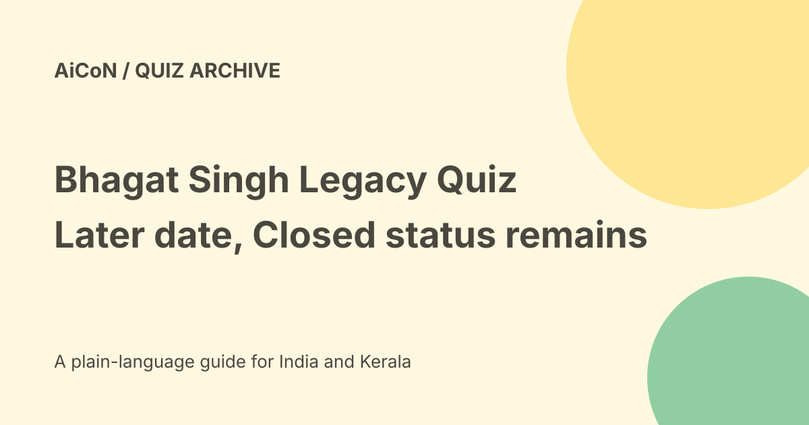

Bhagat Singh Legacy Quiz: Closed status, dates and prizes
The official Shaheed Bhagat Singh Legacy Quiz currently lists 31 October 2026 at 11:45 PM as its end date, but displays Closed. The archive post used a 30 September deadline. The date changed; participation is still not verified, so this guide is a dated record rather than an invitation to enter.

The subject and format
The quiz concerns Bhagat Singh's life, ideas, writings and contribution to India's freedom movement. The page lists ten questions and three hundred seconds, or five minutes.
The displayed terms say the quiz is in English. Prepare from reliable historical sources rather than treating a generated summary as an answer key.
Why the status matters
A future end date and a Closed label point in different directions. A date alone does not prove that the quiz can be started or that an account will be accepted.
Check the actual page and current entry state before planning an attempt. No login, timer or submission was started for this article.
Listed prizes
The page lists fifty winners receiving ₹2,000 each and thirty winners receiving an educational heritage visit to the Shaheed-e-Azam Museum in Punjab. It also describes digital participation certificates.
A listed prize is not an award to every person who reads the page or answers correctly. Travel arrangements and expenses require the actual organiser's rules and confirmation.
Selection wording is more specific
The terms say participants who answer all questions correctly and submit within the stipulated time enter a central eligibility pool. Winners are selected through an automated random process.
The page also uses top-scorer wording in its summary. Read the detailed terms rather than turning the archive's top-fifty shorthand into a guarantee of selection by score alone.
Eligibility and fairness
The displayed rules exclude employees connected with the organisers and their immediate families. Read all current eligibility terms before attempting if access is available.
Use the official account and follow the quiz's fairness rules. Do not submit as another person or manufacture a certificate. A timed government quiz is not an invitation to evade its conditions.
Preparation if officially reopened
- Recheck visible status and the current end date.
- Read eligibility, format and selection terms.
- Confirm the account details required by MyGov.
- Study verified historical material.
- Use a stable connection for the timed attempt.
- Review any rules about attempts and assistance.
- Keep official submission confirmation.
- Retrieve any earned certificate through the actual account.
This is conditional preparation, not a claim that entry is now open.
Certificate versus prize
A participation certificate records participation under the platform's process. It is not the same as a winner notification or a cash payment.
No certificate was downloaded or inspected here. The article should not be used to claim that the reader completed the quiz.
Costs and scam safety
The checked quiz page does not show a paid entry checkout. Do not pay an unofficial contact to reserve a winner slot or release a prize.
Never share a bank password, UPI PIN or OTP with a claimed organiser. Verify any prize communication through the official platform and share only the information the legitimate process requires.
India and Kerala readers
The museum is in Punjab, not Kerala. A listed educational visit is not a guaranteed paid holiday or locally available event.
Check language, eligibility and travel conditions rather than assuming every MyGov quiz has the same rules.
What changed since the original post?
We correct the old September deadline to the currently listed October date, preserve the Closed conflict and add the detailed random-selection wording. No extension of actual entry access is invented.
Frequently asked questions
Is the quiz confirmed open?
No. The checked page displays Closed.
Does a correct attempt guarantee ₹2,000?
No. Selection terms apply.
Was an attempt made here?
No.
Sources: Official quiz status and terms. Checked 7 October 2026.